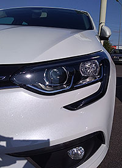
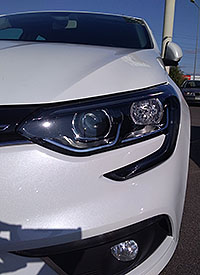
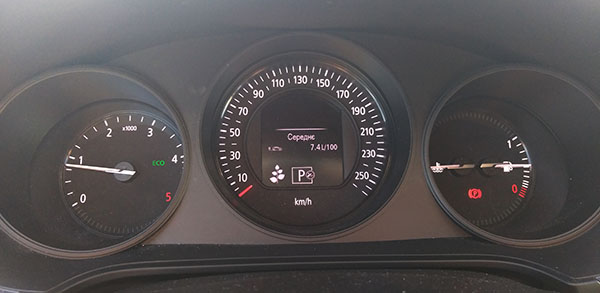
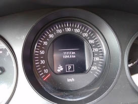
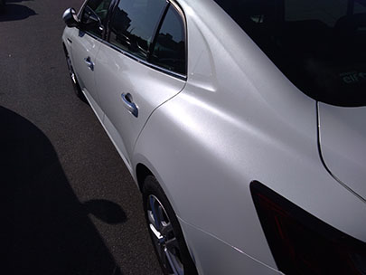
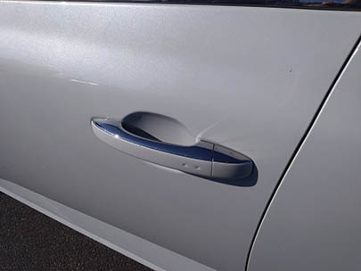

Розповідь про мій Megane Sedan

Привіт, мене звати Радомир і я хочу поділитись з тобою своїм відгуком про автомобіль Renault Megane Sedan четвертої генерації. Конкретно мій автомобіль зроблено в 2017 році, почав експлуатувати в 2018-му. Комплектація середня - ZEN, двигун – дизель 1,5л, коробка – робот із подвійним зчепленням. В комплектацію входять:
- Задній парктронік
- Підігрів передніх сидінь
- Дзеркала, що складаються (додаткова опція)
- Ключ-карта (додаткова опція)
- Двозонний клімат-контроль
- Датчик світла для фар
- Звісно, що електропідіймачі всіх стекол, але це, здається, ставиться на всі мегани.
Дизайн, зовнішній вигляд
 

В першу чергу, що зачаровує, так це, як на мене, - крутий зовнішній вигляд. Дизайнерам варто дати якусь премію (хоча вони вже її, певно, і отримали). Стильні лінії, красиві фари. Дуже подобаються стильні денні LED-ходові вогні, як передні, так і задні. Передні – їх видно здалеку, з потоку завжди можна побачити – їде меган😊. Причому лінія діоду не розривна (ну як, там видно в кутку невеличкий розрив, але це лише зблизька, бо здалеку здається, що це суцільна та нерозривна лінія), бо в нових Renault Talisman та Renault Koleos дизайнери вирішили зробити розрив. Як на мене, то це вже не так стильно, як у Мегана. З приводу задніх денних ходових вогнів – подобається, що вдень вони підсвічуються. Бо по моїм спостереженням в Колеоса, Кадьяра вони не підсвічуються, а в Талісмана – хоч і підсвічуються, але у нього вони зроблені прямою лінією – це менш вишукано і примітно, аніж у Мегана, тут знову Меган всіх обіграв.
З приводу витрат пального
По інструкції написано, що змішаний цикл становить 5,4л/100км. По факту у мене середні витрати ніколи не падали менше 6,9л/100км, але щоб так вийшло, то потрібно дуже старатись – натиснути ЕКО-режим, намагатись не задіювати клімат-контроль. А так, то і всі 7,9-8,3л/100км виходять в середньому за місяць.

Оздоблення салону, пластик
Просто відмінний! Приємний на дотик. Доводилось їздити в таксі на Skoda Octavia, Kia Optima, Kia Sportage, Hyundai Sonata тощо. То скажу так: дверні карти, торпедо, ручки відкривання дверей, да просто все – у мегана краще! Так, меган – це бюджетне авто середнього класу, але, блін, чуваки, ви запхнули туди класний та якісний пластик! На весіллі мене возив Mercedes E-Class чи то 2011-го, чи то 2012-го року. Був на задньому сидінні. Так ось, мені ще тоді здалось, що як для такого бренду, то якийсь дешевий пластик на дверних картах. То в мегані якісніший пластик! Тепер я розумію, що не варто переплачувати за бренди – беріть меган і там все буде!

Двигун. Динаміка
Дизель. В поєднанні з коробкою-роботом із подвійним зчепленням. Скажу чесно - до цього автомобіля у мене не було досвіду їзди з автоматом. Тому враження були, мабуть, як і у всіх новачків після механіки - наче втратив напряму зв'язок із двигуном. Натискаєш педаль - "роздуми", а потім вже рух. Якщо потрібно швидко та різко розігнатись, наприклад, щоб в тебе не влупилась маршрутка, то знайте - не вийде. Все буде плавно і з роздумом. Автомобіль точно для плавного та спокійного водіння

До речі, читав про цей двигун, K9K, то типу "самий популярний..."



Кузов. Фарба
 
Фарба називається "біла перлина". За неї потрібно доплачувати (як і в моєму випадку). Чесно кажучи, це видно лише зблизька. Здалеку нічим не відрізняється від звичайного білого кольору стандартної комплектації. Коли дивлюсь поруч автомобілі, наприклад, Lexus, Toyota, то у них ця перлина набагато краще видна :) Майте на увазі також, що передні крила - пластикові. Певно, це роблять заради економї пального. Товщина металу кузова менша, аніж в VW Passat B5. Якщо спертись рукою в заднє крило та спробувати похитати авто (перевірити роботу амортизаторів), то крило може легко прогнутись. На Пассаті у мене такого ніколи не було - гойдай, скільки хочеш!
Зверху на арці дверей є цікавий технологічний отвір з різьбою (на фото зліва обведений). Гадаю, що він потрібен для фіксації кузова під час фарбування
Висновок
В цілому, то я дуже задоволений автомобілем. Нормальний автомобіль, як за свої гроші :) Я лише шкодую, що тоді не вистачило коштів на максимальну комплектацію. Не вистачає мені зараз самих стильних великих коліс 17-го розміру, панорамного даху. Купляйте та не шкодуйте, не переймайтесь. До речі, дуже радують чіткі гальма - не раз виручали